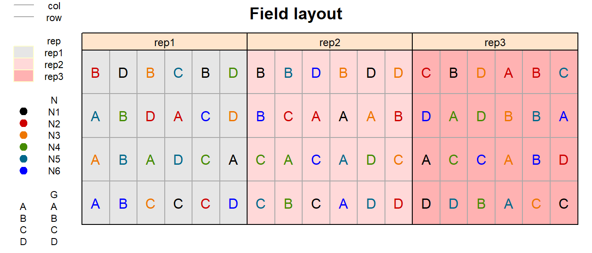
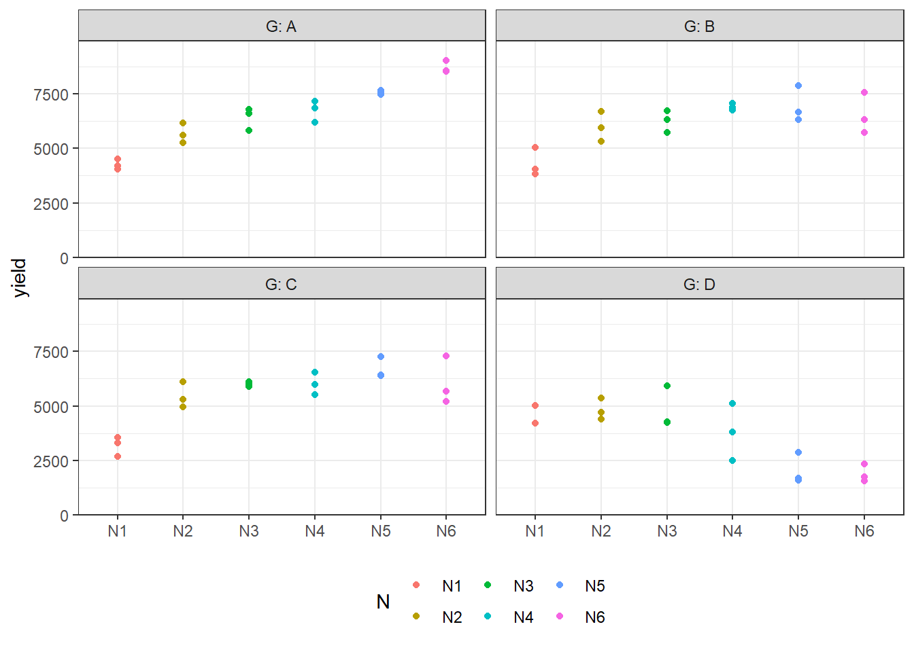
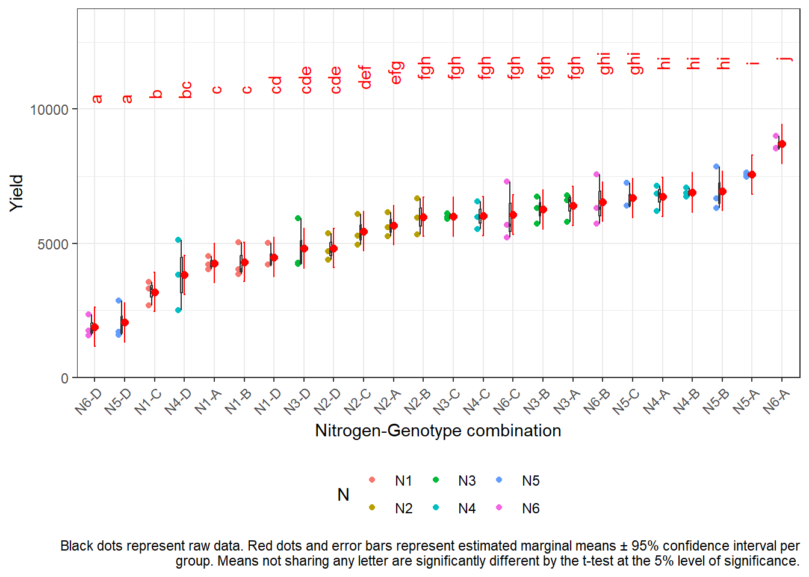
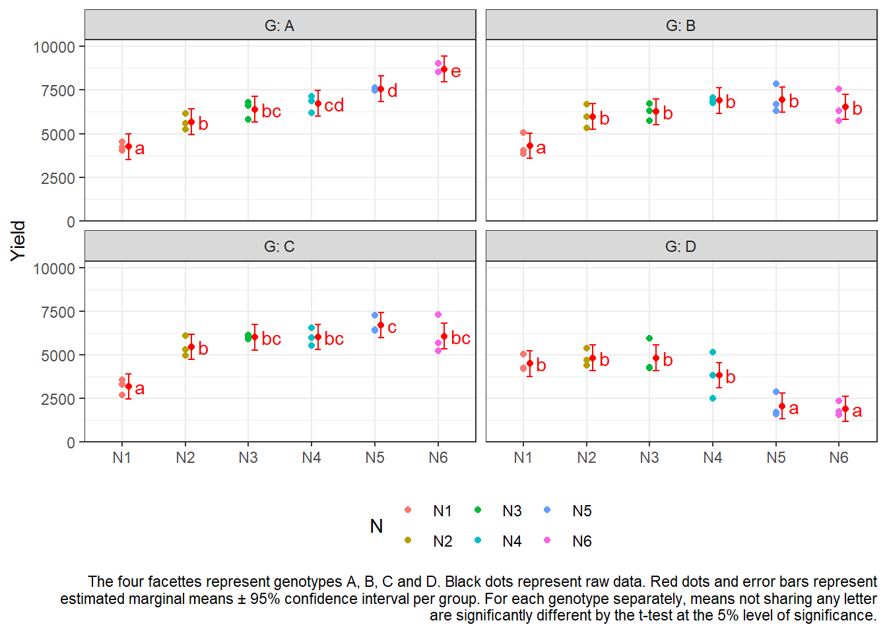

RCBD with 2 factors
# packages
pacman::p_load(tidyverse, # data import and handling
conflicted, # handling function conflicts
emmeans, multcomp, multcompView, # adjusted mean comparisons
ggplot2, desplot) # plotsData
This data is a slightly modified version of that in the split-plot chapter
published in Gomez
& Gomez (1984) from a yield (kg/ha) trial with 4 genotypes
(G) and 6 nitrogen levels (N), leading to 24
treatment level combinations. The data set here has 3 complete
replicates (rep) and is laid out as a randomized complete
block design (RCBD).
Import
# data (import via URL)
dataURL <- "https://raw.githubusercontent.com/SchmidtPaul/DSFAIR/master/data/riceRCBD.csv"
dat <- read_csv(dataURL)
dat## # A tibble: 72 × 6
## row col rep N G yield
## <dbl> <dbl> <chr> <chr> <chr> <dbl>
## 1 2 6 rep1 N1 A 4520
## 2 3 4 rep1 N2 A 5598
## 3 2 3 rep1 N4 A 6192
## 4 1 1 rep1 N6 A 8542
## 5 2 1 rep1 N3 A 5806
## 6 3 1 rep1 N5 A 7470
## 7 4 5 rep1 N1 B 4034
## 8 4 1 rep1 N2 B 6682
## 9 3 2 rep1 N4 B 6869
## 10 1 2 rep1 N6 B 6318
## # … with 62 more rowsFormatting
Before anything, the columns rep, N and
G should be encoded as factors, since R by default encoded
them as character.
dat <- dat %>%
mutate_at(vars(rep, N, G), as.factor)Exploring
In order to obtain a field layout of the trial, we can use the
desplot() function. Notice that for this we need two data
columns that identify the row and col of each
plot in the trial.
desplot(data = dat,
form = rep ~ col + row | rep, # fill color per rep, headers per rep
text = G, cex = 1, shorten = "no", # show genotype names per plot
col = N, # color of genotype names for each N-level
out1 = col, out1.gpar = list(col = "darkgrey"), # lines between columns
out2 = row, out2.gpar = list(col = "darkgrey"), # lines between rows
main = "Field layout", show.key = TRUE, key.cex = 0.7) # formatting
Just as in a RCBD for a single treatment factor, a RCBD for two treatment factors has replicates arranged as complete blocks. Thus, all 24 treatment level combinations are grouped together in three complete blocks, respectively.
We could now have a look at the arithmetic means and standard
deviations for yield per genotype (G) and nitrogen level
(N) separately, but also for their combinations:
dat %>%
group_by(G) %>%
summarize(mean = mean(yield),
std.dev = sd(yield)) %>%
arrange(desc(mean))## # A tibble: 4 × 3
## G mean std.dev
## <fct> <dbl> <dbl>
## 1 A 6554. 1475.
## 2 B 6156. 1078.
## 3 C 5563. 1269.
## 4 D 3642. 1434.dat %>%
group_by(N) %>%
summarize(mean = mean(yield),
std.dev = sd(yield)) %>%
arrange(desc(mean))## # A tibble: 6 × 3
## N mean std.dev
## <fct> <dbl> <dbl>
## 1 N3 5866. 832.
## 2 N4 5864. 1434.
## 3 N5 5812 2349.
## 4 N6 5797. 2660.
## 5 N2 5478. 657.
## 6 N1 4054. 672.dat %>%
group_by(N, G) %>%
summarize(mean = mean(yield),
std.dev = sd(yield)) %>%
arrange(desc(mean)) %>%
print(n=Inf) # show more than default 10 rows## # A tibble: 24 × 4
## # Groups: N [6]
## N G mean std.dev
## <fct> <fct> <dbl> <dbl>
## 1 N6 A 8701. 270.
## 2 N5 A 7563. 86.9
## 3 N5 B 6951. 808.
## 4 N4 B 6895 166.
## 5 N4 A 6733. 490.
## 6 N5 C 6687. 496.
## 7 N6 B 6540. 936.
## 8 N3 A 6400 523.
## 9 N3 B 6259 499.
## 10 N6 C 6065. 1097.
## 11 N4 C 6014 515.
## 12 N3 C 5994 101.
## 13 N2 B 5982 684.
## 14 N2 A 5672 458.
## 15 N2 C 5443. 589.
## 16 N2 D 4816 506.
## 17 N3 D 4812 963.
## 18 N1 D 4481. 463.
## 19 N1 B 4306 646.
## 20 N1 A 4253. 248.
## 21 N4 D 3816 1311.
## 22 N1 C 3177. 453.
## 23 N5 D 2047. 703.
## 24 N6 D 1881. 407.We can also create a plot to get a better feeling for the data.
ggplot(
data = dat,
aes(
y = yield,
x = N,
color = N
)
) +
facet_wrap(~G, labeller = label_both) + # facette per G level
geom_point() + # dots representing the raw data
scale_y_continuous(
limits = c(0, NA), # make y-axis start at 0
expand = expansion(mult = c(0, 0.1)) # no space below 0
) +
scale_x_discrete(name = NULL) + # x-axis
theme_bw() + # clearer plot format
theme(legend.position = "bottom") # legend on top
Modelling
Finally, we can decide to fit a linear model with yield
as the response variable. In this example it makes sense to mentally
group the effects in our model as either design effects or
treatment effects. The treatments here are the
genotypes G and the nitrogen levels N which we
will include in the model as main effects, but also via their
interaction effect N:G. Regarding the design, the
model needs to contain a block (rep) effect.
mod <- lm(
yield ~ N + G + N:G + rep,
data = dat
)ANOVA
As a next step, we can conduct an ANOVA for this model.
anova(mod)## Analysis of Variance Table
##
## Response: yield
## Df Sum Sq Mean Sq F value Pr(>F)
## N 5 30480453 6096091 15.4677 6.509e-09 ***
## G 3 89885035 29961678 76.0221 < 2.2e-16 ***
## rep 2 1084820 542410 1.3763 0.2627
## N:G 15 69378044 4625203 11.7356 4.472e-11 ***
## Residuals 46 18129432 394118
## ---
## Signif. codes: 0 '***' 0.001 '**' 0.01 '*' 0.05 '.' 0.1 ' ' 1Whenever we have multiple treatment effects in a model, we should
focus on the term with the highest complexity when it comes to the
ANOVA. In this case, this is the N:G interaction effect and
its F-test is significant (p<0.001).
As a result, we should only compares means for the 24 genotype-nitrogen-combinations (“cell means”) and not for the 6 nitrogens across the genotypes or 4 genotypes across the nitrogens (“marginal means”). This is because marginal means are misleading in the presence of interaction.
Mean comparisons
Accordingly, we will proceed comparing the 24 means for
N:G. Whenever means of a two-way treatment interaction such
as this are to be compared, I choose between two options, which are both
valid but one may be more apt to answer the question at hand:
~ N:GComparing all combinations to all other combinations~ N|GComparing all genotype means per nitrogen (or the other way around)
Option 1: ~ N:G
Here, we really calculate and test all of the 276 possible differences between the 24 nitrogen-genotype combination means.
all_mean_comparisons <- mod %>%
emmeans(specs = ~ N:G) %>% # compare all combs to all other combs
cld(adjust = "none", Letters = letters) # add compact letter display
all_mean_comparisons## N G emmean SE df lower.CL upper.CL .group
## N6 D 1881 362 46 1151 2610 a
## N5 D 2047 362 46 1317 2776 a
## N1 C 3177 362 46 2448 3907 b
## N4 D 3816 362 46 3086 4546 bc
## N1 A 4253 362 46 3523 4982 c
## N1 B 4306 362 46 3576 5036 c
## N1 D 4481 362 46 3752 5211 cd
## N3 D 4812 362 46 4082 5542 cde
## N2 D 4816 362 46 4086 5546 cde
## N2 C 5443 362 46 4713 6172 def
## N2 A 5672 362 46 4942 6402 efg
## N2 B 5982 362 46 5252 6712 fgh
## N3 C 5994 362 46 5264 6724 fgh
## N4 C 6014 362 46 5284 6744 fgh
## N6 C 6065 362 46 5336 6795 fgh
## N3 B 6259 362 46 5529 6989 fgh
## N3 A 6400 362 46 5670 7130 fgh
## N6 B 6540 362 46 5811 7270 ghi
## N5 C 6687 362 46 5958 7417 ghi
## N4 A 6733 362 46 6003 7462 hi
## N4 B 6895 362 46 6165 7625 hi
## N5 B 6951 362 46 6221 7680 hi
## N5 A 7563 362 46 6834 8293 i
## N6 A 8701 362 46 7971 9430 j
##
## Results are averaged over the levels of: rep
## Confidence level used: 0.95
## significance level used: alpha = 0.05
## NOTE: If two or more means share the same grouping symbol,
## then we cannot show them to be different.
## But we also did not show them to be the same.all_mean_comparisons <- all_mean_comparisons %>%
as_tibble() %>%
mutate(N_G = paste0(N, "-", G)) %>% # create helper column with combs
mutate(N_G = fct_reorder(N_G, emmean)) # sort combs according to emmean
# do the same for the raw data
dat <- dat %>%
mutate(N_G = paste0(N, "-", G)) %>%
mutate(N_G = fct_relevel(N_G, levels(all_mean_comparisons$N_G)))
ggplot() +
# dots representing the raw data
geom_point(
data = dat,
aes(y = yield, x = N_G, color = N),
position = position_nudge(x = -0.2)
) +
# black boxplot
geom_boxplot(
data = dat,
aes(y = yield, x = N_G),
width = 0.05,
outlier.shape = NA,
position = position_nudge(x = -0.1)
) +
# red mean value
geom_point(
data = all_mean_comparisons,
aes(y = emmean, x = N_G),
size = 2,
color = "red"
) +
# red mean errorbar
geom_errorbar(
data = all_mean_comparisons,
aes(ymin = lower.CL, ymax = upper.CL, x = N_G),
width = 0.05,
color = "red"
) +
# red letters
geom_text(
data = all_mean_comparisons,
aes(
y = 10000,
x = N_G,
label = .group
),
angle = 90,
hjust = 0,
color = "red"
) +
# y-axis
scale_y_continuous(
name = "Yield",
limits = c(0, 12500),
expand = expansion(mult = c(0, 0.1))
) +
# x-axis
scale_x_discrete(name = "Nitrogen-Genotype combination") +
# general layout
theme_bw() +
theme(
axis.text.x = element_text(
angle = 45,
hjust = 1,
vjust = 1
),
legend.position = "bottom"
) +
labs(
caption = str_wrap("Black dots represent raw data. Red dots and error bars represent estimated marginal means ± 95% confidence interval per group. Means not sharing any letter are significantly different by the t-test at the 5% level of significance.", width = 120)
)
As can be seen, this option can lead to overwhelming results when there are too many treatment level combinations.
Option 2: ~ N|G
Here, we only calculate and test 60 differences between the 24
nitrogen-genotype combination means, since - separately for each of the
4 genotypes - we only compare all 6 nitrogen means to each other,
leading to 4x15=60 comparisons. (Note that you may analogously switch
N|G to G|N and instead present results for
these 6x6=36 comparisons, if they seem more apt for your research
question.)
withinG_mean_comparisons <- mod %>%
emmeans(specs = ~ N|G) %>%
cld(adjust="none", Letters=letters) # add compact letter display
withinG_mean_comparisons ## G = A:
## N emmean SE df lower.CL upper.CL .group
## N1 4253 362 46 3523 4982 a
## N2 5672 362 46 4942 6402 b
## N3 6400 362 46 5670 7130 bc
## N4 6733 362 46 6003 7462 cd
## N5 7563 362 46 6834 8293 d
## N6 8701 362 46 7971 9430 e
##
## G = B:
## N emmean SE df lower.CL upper.CL .group
## N1 4306 362 46 3576 5036 a
## N2 5982 362 46 5252 6712 b
## N3 6259 362 46 5529 6989 b
## N6 6540 362 46 5811 7270 b
## N4 6895 362 46 6165 7625 b
## N5 6951 362 46 6221 7680 b
##
## G = C:
## N emmean SE df lower.CL upper.CL .group
## N1 3177 362 46 2448 3907 a
## N2 5443 362 46 4713 6172 b
## N3 5994 362 46 5264 6724 bc
## N4 6014 362 46 5284 6744 bc
## N6 6065 362 46 5336 6795 bc
## N5 6687 362 46 5958 7417 c
##
## G = D:
## N emmean SE df lower.CL upper.CL .group
## N6 1881 362 46 1151 2610 a
## N5 2047 362 46 1317 2776 a
## N4 3816 362 46 3086 4546 b
## N1 4481 362 46 3752 5211 b
## N3 4812 362 46 4082 5542 b
## N2 4816 362 46 4086 5546 b
##
## Results are averaged over the levels of: rep
## Confidence level used: 0.95
## significance level used: alpha = 0.05
## NOTE: If two or more means share the same grouping symbol,
## then we cannot show them to be different.
## But we also did not show them to be the same.withinG_mean_comparisons <- as_tibble(withinG_mean_comparisons)
ggplot() +
facet_wrap(~G, labeller = label_both) + # facette per G level
# dots representing the raw data
geom_point(
data = dat,
aes(y = yield, x = N, color = N)
) +
# red dots representing the adjusted means
geom_point(
data = withinG_mean_comparisons,
aes(y = emmean, x = N),
color = "red",
position = position_nudge(x = 0.1)
) +
# red error bars representing the confidence limits of the adjusted means
geom_errorbar(
data = withinG_mean_comparisons,
aes(ymin = lower.CL, ymax = upper.CL, x = N),
color = "red",
width = 0.1,
position = position_nudge(x = 0.1)
) +
# red letters
geom_text(
data = withinG_mean_comparisons,
aes(y = emmean, x = N, label = str_trim(.group)),
color = "red",
hjust = 0,
position = position_nudge(x = 0.2)
) +
# y-axis
scale_y_continuous(
name = "Yield",
limits = c(0, NA),
expand = expansion(mult = c(0, 0.1))
) +
# x-axis
scale_x_discrete(name = NULL) +
# general layout
theme_bw() + # clearer plot format
theme(legend.position = "bottom") + # legend on top
labs(caption = str_wrap("The four facettes represent genotypes A, B, C and D. Black dots represent raw data. Red dots and error bars represent estimated marginal means ± 95% confidence interval per group. For each genotype separately, means not sharing any letter are significantly different by the t-test at the 5% level of significance.", width = 120))
R-Code and exercise solutions
Please click here to find a folder with .R
files. Each file contains
- the entire R-code of each example combined, including
- solutions to the respective exercise(s).
Please feel free to contact me about any of this!
schmidtpaul1989@outlook.com